Collaborate with and be kind to others. You are expected to work together as a group.
Ask questions. Remember that we won’t discuss these exercises as a class.
Activity Specific
Help each other with the following:
Create a new Quarto document in the activities folder of your portfolio project and do not forgot to include it in _quarto.yml file. Then click the </> Code link at the top right corner of this page and copy the code into the created Quarto document. This is where you’ll take notes. Remember that the portfolio is yours, so take notes in whatever way is best for you.
Don’t start the Exercises section before we get there as a class. First, engage in class discussion and eventually collaborate with your group on the exercises!
There are some coding “intuition checks” along the way. The goal here is to start connecting to and expanding upon the structure of our ggplot() code. Don’t spend more than a few minutes trying these out. If you don’t get it, no problem! You can move on and learn the code in the next exercise.
The goal is for every student to finish the required exercises before we meet again. After that, choose your own adventure!
If you’re feeling like the required exercises gave you plenty to chew on, simply stop the activity. Go back and review the material you learned. You never need to think about the optional exercises.
If you’re feeling like your brain still has some space after completing the required exercises, try the optional ones. These exercises are either “bonus” visualizations or intuition checks about some material coming up.
4.1 Review
Let’s review some univariate and bivariate plotting concepts using some daily weather data from Australia. This is a subset of the data from the weatherAUS data in the rattle package.
library(tidyverse)# Import dataweather <-read.csv("https://mac-stat.github.io/data/weather_3_locations.csv") |>mutate(date =as.Date(date)) # Check out the first 6 rows# What are the units of observation?head(weather,6)
date location mintemp maxtemp rainfall evaporation sunshine
1 2020-01-01 Wollongong 17.1 23.1 0 NA NA
2 2020-01-02 Wollongong 17.7 24.2 0 NA NA
3 2020-01-03 Wollongong 19.7 26.8 0 NA NA
4 2020-01-04 Wollongong 20.4 35.5 0 NA NA
5 2020-01-05 Wollongong 19.8 21.4 0 NA NA
6 2020-01-06 Wollongong 18.3 22.9 0 NA NA
windgustdir windgustspeed winddir9am winddir3pm windspeed9am windspeed3pm
1 SSW 39 SSW SSE 20 15
2 SSW 37 S ENE 13 15
3 NE 41 NNW NNE 7 17
4 SSW 78 NE NNE 15 17
5 SSW 57 SSW S 31 35
6 NE 35 ESE NE 17 20
humidity9am humidity3pm pressure9am pressure3pm cloud9am cloud3pm temp9am
1 69 64 1014.9 1014.0 8 1 19.1
2 72 54 1020.1 1017.7 7 1 19.8
3 72 71 1017.5 1013.0 6 NA 23.4
4 77 69 1008.8 1003.9 NA NA 24.5
5 70 75 1018.9 1019.9 NA 7 20.7
6 71 71 1021.2 1018.2 NA NA 20.9
temp3pm raintoday risk_mm raintomorrow
1 22.9 No 0.0 No
2 23.6 No 0.0 No
3 25.7 No 0.0 No
4 26.7 No 0.0 No
5 20.0 No 0.0 No
6 22.6 No 0.8 No
# How many data points do we have? nrow(weather)
[1] 2367
# What type of variables do we have?str(weather)
'data.frame': 2367 obs. of 24 variables:
$ date : Date, format: "2020-01-01" "2020-01-02" ...
$ location : chr "Wollongong" "Wollongong" "Wollongong" "Wollongong" ...
$ mintemp : num 17.1 17.7 19.7 20.4 19.8 18.3 19.9 20.1 19.8 20.5 ...
$ maxtemp : num 23.1 24.2 26.8 35.5 21.4 22.9 25.6 23.2 23.1 25.4 ...
$ rainfall : num 0 0 0 0 0 0 0.8 1.6 0 0 ...
$ evaporation : num NA NA NA NA NA NA NA NA NA NA ...
$ sunshine : num NA NA NA NA NA NA NA NA NA NA ...
$ windgustdir : chr "SSW" "SSW" "NE" "SSW" ...
$ windgustspeed: int 39 37 41 78 57 35 44 41 39 56 ...
$ winddir9am : chr "SSW" "S" "NNW" "NE" ...
$ winddir3pm : chr "SSE" "ENE" "NNE" "NNE" ...
$ windspeed9am : int 20 13 7 15 31 17 30 31 24 19 ...
$ windspeed3pm : int 15 15 17 17 35 20 7 33 26 39 ...
$ humidity9am : int 69 72 72 77 70 71 76 77 76 79 ...
$ humidity3pm : int 64 54 71 69 75 71 72 76 79 76 ...
$ pressure9am : num 1015 1020 1018 1009 1019 ...
$ pressure3pm : num 1014 1018 1013 1004 1020 ...
$ cloud9am : int 8 7 6 NA NA NA NA 8 NA NA ...
$ cloud3pm : int 1 1 NA NA 7 NA NA NA NA NA ...
$ temp9am : num 19.1 19.8 23.4 24.5 20.7 20.9 22.9 21.3 21.2 23 ...
$ temp3pm : num 22.9 23.6 25.7 26.7 20 22.6 24.9 22.2 22.2 25.1 ...
$ raintoday : chr "No" "No" "No" "No" ...
$ risk_mm : num 0 0 0 0 0 0.8 1.6 0 0 1 ...
$ raintomorrow : chr "No" "No" "No" "No" ...
Example 1
Construct a plot that allows us to examine how temp3pm varies.
#Add a density plot for quantitive ggplot(weather, aes(x=temp3pm)) +geom_density(color ="black", fill ="orange")
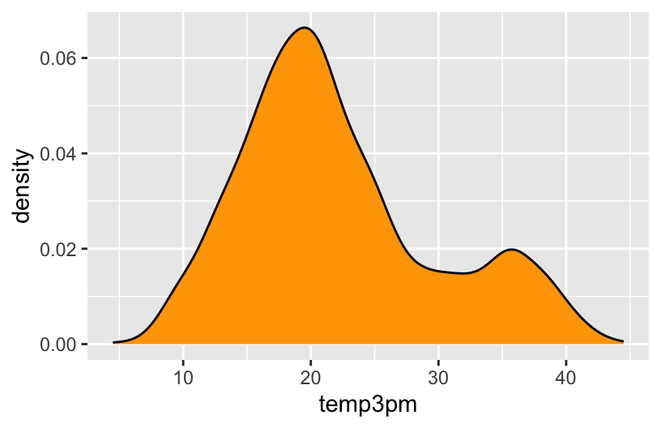
### Example 2 {-}#Construct 3 plots that address the following research question:
# Plot 1 (no facets & starting from a density plot of temp3pm)ggplot(weather, aes(x = temp3pm, fill = location)) +geom_density(alpha =0.5)
# Plot 2 (no facets or densities)ggplot(weather, aes(y = temp3pm, x = location)) +geom_boxplot(fill ="yellow")
library(ggridges)ggplot(weather, aes(x = temp3pm, y = location)) +geom_density_ridges(aes(fill = location, alpha =0.5)) +labs(x ="Temperature at 3 PM",y ="Location",title ="Temperature Distributions by Location at 3 PM" ) +theme_minimal()
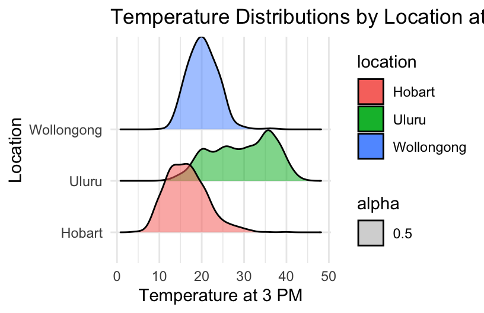
5 How do afternoon temperatures (temp3pm) differ by location?
the temp3pm differe significantly among cities.
Hobart: Cooler, with temperatures mostly around 15-20°C.
Uluru: Hotter and variable, ranging from 15-40°C.
Wollongong: Consistent around 20°C.
Reflection
Temperatures tend to be highest, and most variable, in Uluru. There, they range from ~10 to ~45 with a typical temp around ~30 degrees.
Temperatures tend to be lowest in Hobart. There, they range from ~5 to ~45 with a typical temp around ~15 degrees.
Wollongong temps are in between and are the least variable from day to day.
SUBTLETIES: Defining fill or color by a variable
How we define the fill or color depends upon whether we’re defining it by a named color or by some variable in our dataset. For example:
geom___(fill = "blue") named colors are defined outside the aesthetics and put in quotes
geom___(aes(fill = variable)) or ggplot(___, aes(fill = variable))
colors/fills defined by a variable are defined inside the aesthetics
Example 3
Let’s consider Wollongong alone:
# Don't worry about the syntax (we'll learn it soon)woll <- weather |>filter(location =="Wollongong") |>mutate(date =as.Date(date))
# How often does it raintoday?# Fill your geometric layer with the color blue.ggplot(woll, aes(x = raintoday))+geom_bar(fill ="blue")
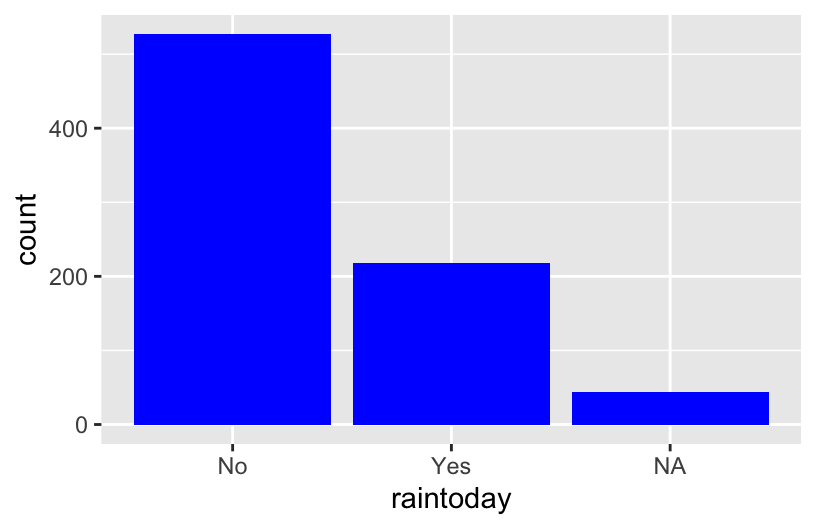
# If it does raintoday, what does this tell us about raintomorrow?# Use your intuition firstggplot(woll, aes(x = raintoday)) +geom_bar(aes(fill = raintomorrow))
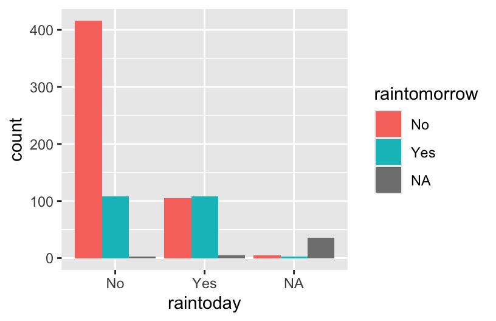
# fill the raintoday with the probablity of raintomorrow
# Now compare different approaches# we get the same result. # Default: stacked barsggplot(woll, aes(x = raintoday, fill = raintomorrow)) +geom_bar()
#geom_bar(position = "dodge") creates a bar chart where the bars for different groups are placed side by side (horizontally dodged) instead of stacked on top of each other. This makes it easier to compare the categories within each group.
# Proportional bars# position = "fill" refers to filling the frame, nothing to do with the color-related fillggplot(woll, aes(x = raintoday, fill = raintomorrow)) +geom_bar(position ="fill")
Reflection
There’s often not one “best plot”, but a combination of plots that provide a complete picture:
The stacked and side-by-side bars reflect that on most days, it does not rain.
The proportional / filled bars lose that information, but make it easier to compare proportions: it’s more likely to rain tomorrow if it also rains today.
Example 4
Construct a plot that illustrates how 3pm temperatures (temp3pm) vary by date in Wollongong. Represent each day on the plot and use a curve/line to help highlight the trends.
# THINK: What variable goes on the y-axis?# For the curve, try adding span = 0.5 to tweak the curvatureggplot(woll, aes(x=date, y = temp3pm))+geom_point(color ="purple")+geom_smooth(span =0.5)
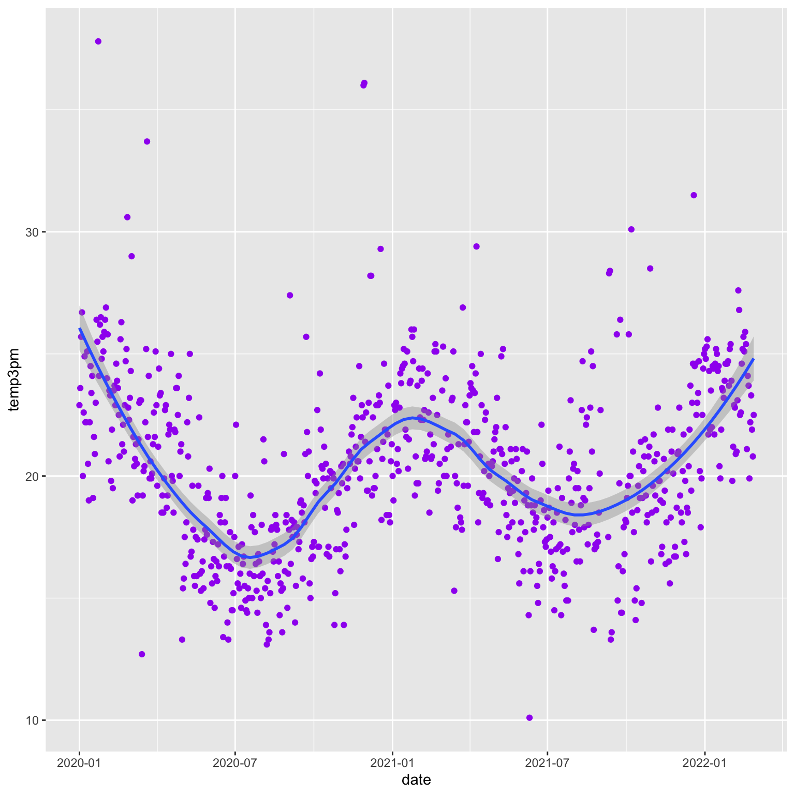
# Instead of a curve that captures the general TREND,# draw a line that illustrates the movement of RAW temperatures from day to day# NOTE: We haven't learned this geom yet! Guess.ggplot(woll, aes(y = temp3pm, x = date)) +geom_line(color="red") +geom_smooth()
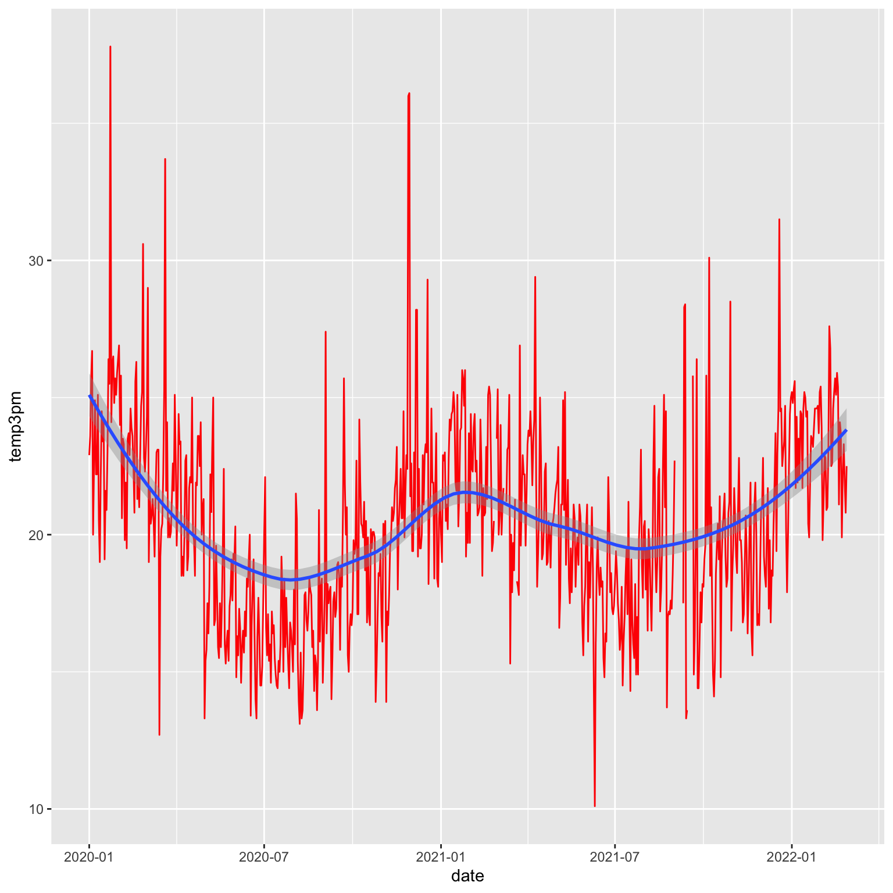
# It was easy
NOTE: A line plot isn’t always appropriate! It can be useful in situations like this, when our data are chronological.
Reflection
There’s a seasonal / cyclic behavior in temperatures – they’re highest in January (around 23 degrees) and lowest in July (around 16 degrees). There are also some outliers – some abnormally hot and cold days.
5.1 New Stuff
Next, let’s consider the entire weather data for all 3 locations. The addition of location adds a 3rd variable into our research questions:
How does the relationship between raintoday and raintomorrow vary by location?
How does the behavior of temp3pm over date vary by location?
And so on.
Thus far, we’ve focused on the following components of a plot:
setting up a frame
adding layers / geometric elements
splitting the plot into facets for different groups / categories
change the theme, e.g. axis labels, color, fill
We’ll have to think about all of this, along with scales. Scales change the color, fill, size, shape, or other properties according to the levels of a new variable. This is different than just assigning scale by, for example, color = "blue".
Work on the examples below in your groups. Check in with your intuition! We’ll then discuss as a group as relevant.
Example 5
# Plot temp3pm vs temp9am# Change the code in order to indicate the location to which each data point correspondsggplot(weather, aes(y = temp3pm, x = temp9am, color = location)) +geom_point()
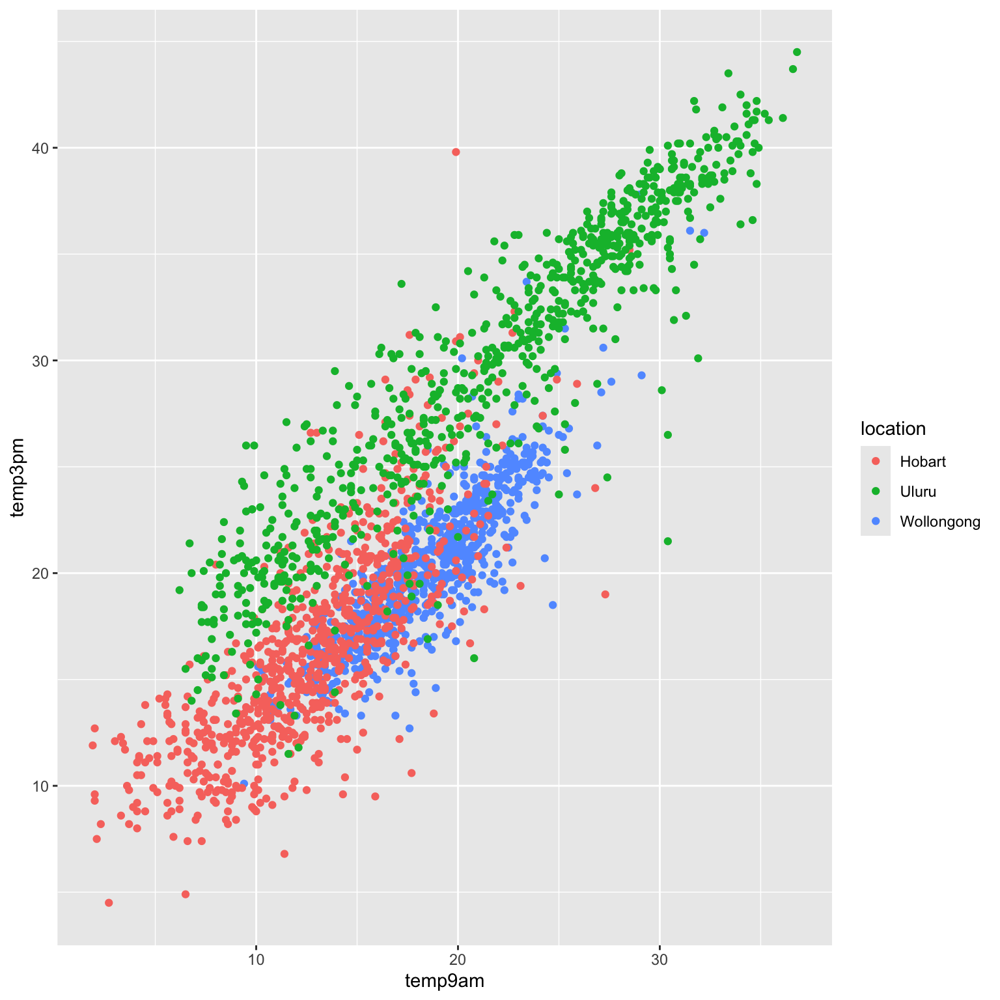
# you can also try another way too. ggplot(weather, aes(y = temp3pm, x = temp9am)) +geom_point(aes(color = location))
# Change the code in order to indicate the location to which each data point corresponds# AND identify the days on which it rained / didn't raintodayggplot(weather, aes(y = temp3pm, x = temp9am)) +geom_point(aes(color = location))+facet_wrap(~ raintoday)
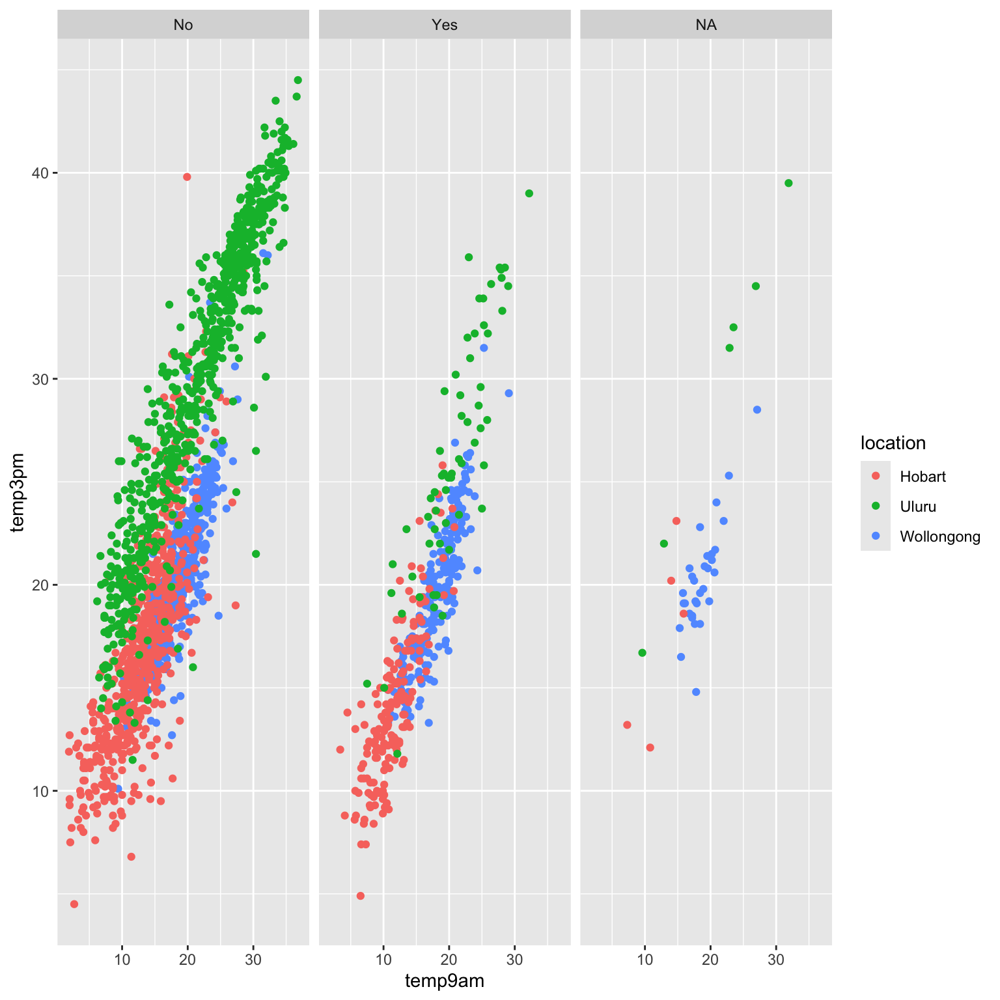
# divide based on (yes, no and NA) and than write the location on top of it.
# How many ways can you think to make that plot of temp3pm vs temp9am with info about location and rain?# Play around!# Second wayggplot(weather, aes(x=temp9am, y = temp3pm, color = location))+geom_point()+facet_wrap(~raintoday)
# Third Way:ggplot(weather, aes(x=temp9am, y=temp3pm, color = location, shape = raintoday)) +geom_point()
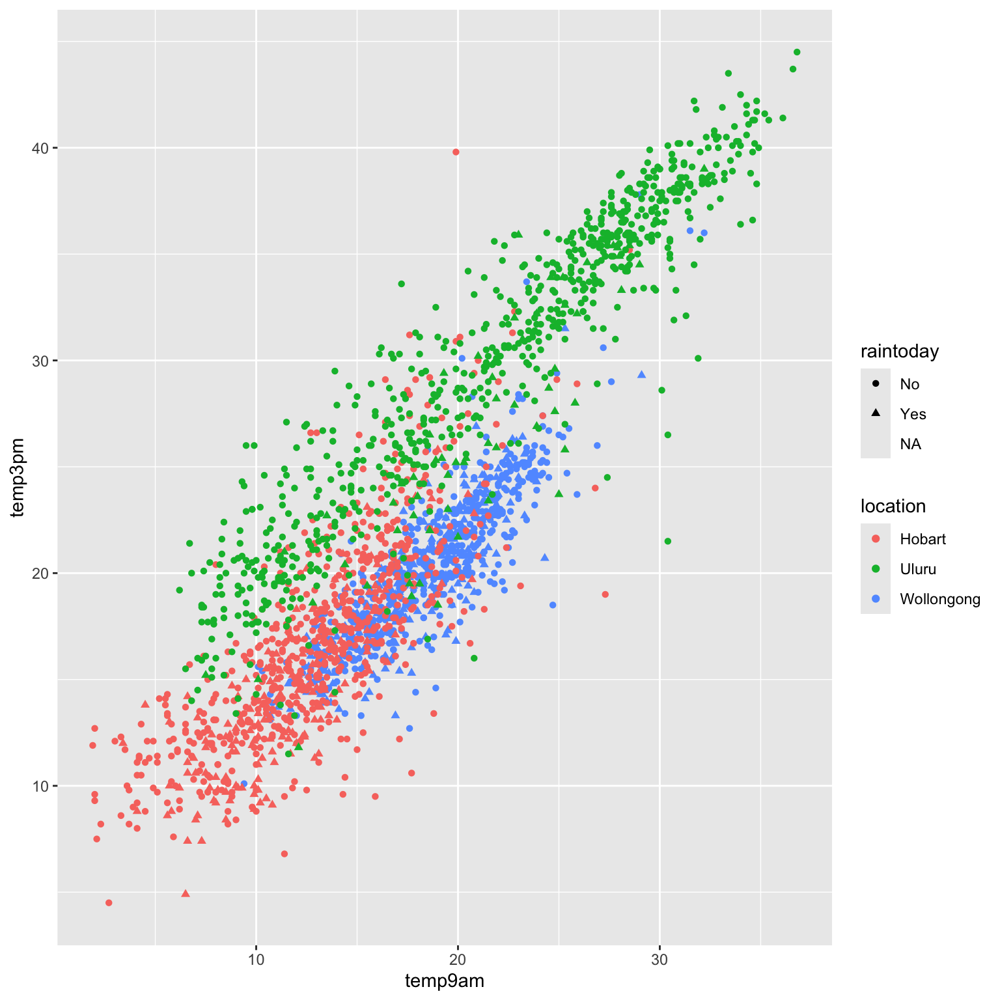
Example 6
#Change the code in order to construct a line plot of temp3pm vs date for each separate location (no points!)#One way :ggplot(weather, aes(y = temp3pm, x = date, color = location)) +geom_line() +geom_smooth(color="black", size =0.1) # should come after the "facet_wrap(~location) " so it apply the line for each graph.
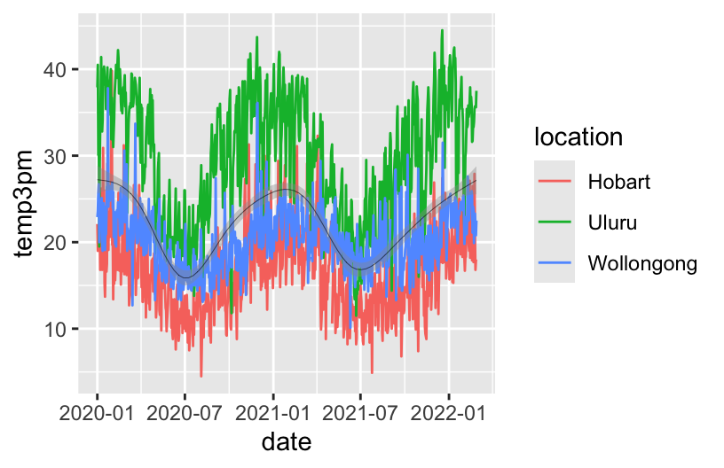
# Another way to do it. ggplot(weather, aes(y = temp3pm, x = date)) +geom_line(color="red") +facet_wrap(~location) +geom_smooth(color="black", size =0.5) # should come after the "facet_wrap(~location) " so it apply the line for each graph.
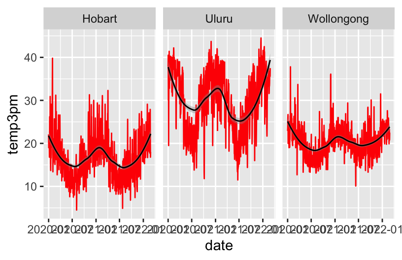
Example 7
# Plot the relationship of raintomorrow & raintoday# Change the code in order to indicate this relationship by locationggplot(weather, aes(x = raintoday, fill = raintomorrow)) +geom_bar(position ="fill") +facet_wrap(~ location)
How to Not Get Overwhelmed?
There’s no end to the number and type of visualizations you could make. And it’s important to not just throw spaghetti at the wall until something sticks. FlowingData shows that one dataset can be visualized many ways, and makes good recommendations for data viz workflow, which we modify and build upon here:
Identify simple research questions.
What do you want to understand about the variables or the relationships among them?
Start with the basics and work incrementally.
Identify what variables you want to include in your plot and what structure these have (eg: categorical, quantitative, dates)
Start simply. Build a plot of just 1 of these variables, or the relationship between 2 of these variables.
Set up a plotting frame and add just one geometric layer at a time.
Start tweaking: add whatever new variables you want to examine,
Ask your plot questions.
What questions does your plot answer? What questions are left unanswered by your plot?
What new questions does your plot spark / inspire?
Do you have the viz tools to answer these questions, or might you learn more?
Focus.
Reporting a large number of visualizations can overwhelm the audience and obscure your conclusions. Instead, pick out a focused yet comprehensive set of visualizations.
5.2 Exercises (required)
The story
Though far from a perfect assessment of academic preparedness, SAT scores have historically been used as one measurement of a state’s education system. The education dataset contains various education variables for each state:
# Import and check out dataeducation <-read.csv("https://mac-stat.github.io/data/sat.csv")head(education)
Summarize your observations from the plot. Comment on the basics: range, typical outcomes, shape. (Any theories about what might explain this non-normal shape?)
average SAT scores range from roughly 800 to 1100. They appear bi-modal.
Exercise 2: SAT Scores vs Per Pupil Spending & SAT Scores vs Salaries
The first question we’d like to answer is: Can the variability in sat scores from state to state be partially explained by how much a state spends on education, specifically its per pupil spending (expend) and typical teacher salary?
Part a
# Construct a plot of sat vs expend# Include a "best fit linear regression model" (HINT: method = "lm")ggplot(education, aes( y = sat, x = expend)) +geom_point(color="red", alpha =0.5) +geom_smooth(method ="lm")
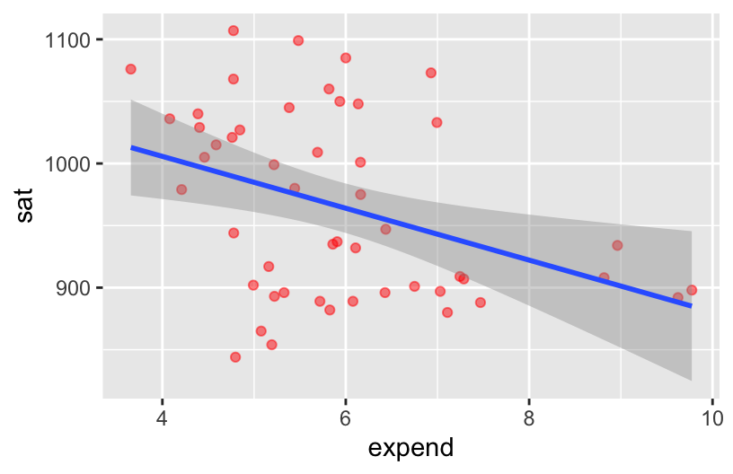
# Construct a plot of sat vs salary# Include a "best fit linear regression model" (HINT: method = "lm")ggplot(education, aes(x=salary, y=sat))+geom_point(color ="purple", alpha =0.9) +geom_smooth(method ="lm")
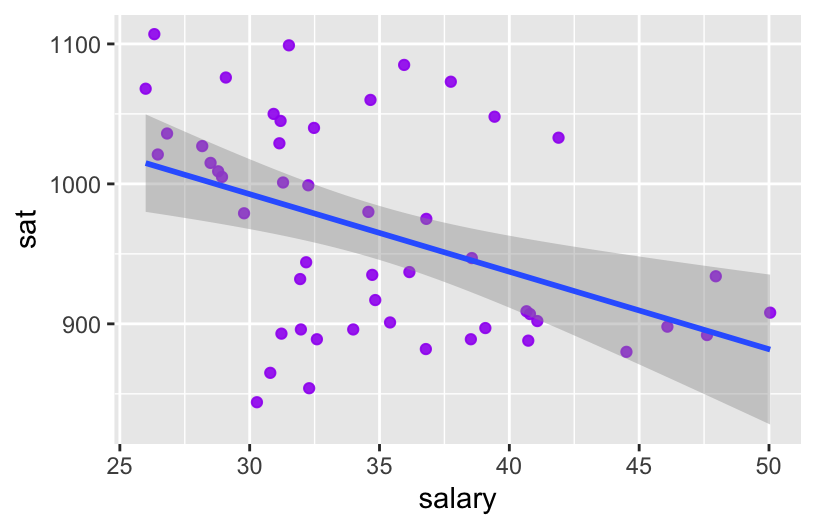
Part b
What are the relationship trends between SAT scores and spending? Is there anything that surprises you?
There is a strong, negative relationship between noth amoung of spending and salary with sat outcomes. The graphs show that as both kind of spending increase, the SAT score outcomes decrease. This is surpise find becuase it is counter intuitive. Mostly the logic is that more spending, better SAT score outcome.
Exercise 3: SAT Scores vs Per Pupil Spending and Teacher Salaries
Construct one visualization of the relationship of sat with salaryandexpend. HINT: Start with just 2 variables and tweak that code to add the third variable. Try out a few things!
# one way ggplot(education, aes(x= salary, color = expend , y=sat))+geom_point(alpha =0.9) +geom_smooth(method ="lm")
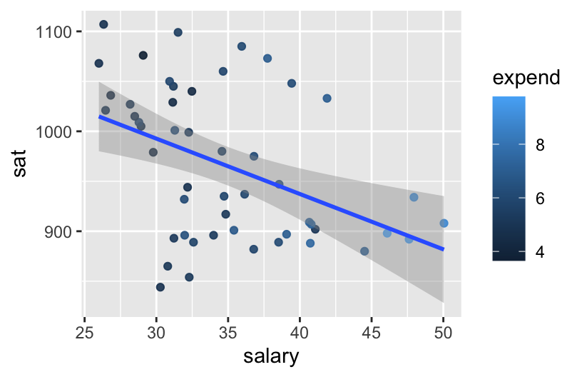
Exercise 4: Another way to Incorporate Scale
It can be tough to distinguish color scales and size scales for quantitative variables. Another option is to discretize a quantitative variable, or basically cut it up into categories.
Construct the plot below. Check out the code and think about what’s happening here. What happens if you change “2” to “3”?
ggplot(education, aes(y = sat, x = salary, color =cut(expend, 2))) +geom_point() +geom_smooth(se =FALSE, method ="lm")
Describe the trivariate relationship between sat, salary, and expend.
States with lower salaries and expenditures tend to have higher SAT scores.
Exercise 5: Finally an Explanation
It’s strange that SAT scores seem to decrease with spending. But we’re leaving out an important variable from our analysis: the fraction of a state’s students that actually take the SAT. The fracCat variable indicates this fraction: low (under 15% take the SAT), medium (15-45% take the SAT), and high (at least 45% take the SAT).
Part a
Build a univariate viz of fracCat to better understand how many states fall into each category.
Build 2 bivariate visualizations that demonstrate the relationship between sat and fracCat. What story does your graphic tell and why does this make contextual sense?
#### Part c {-}# Make a trivariate visualization that demonstrates the relationship of `sat` with `expend` AND `fracCat`. Highlight the differences in `fracCat` groups through color AND unique trend lines. ggplot(education, aes(y = sat, x = expend, color = fracCat)) +geom_point() +geom_smooth(se =FALSE, method ="lm")
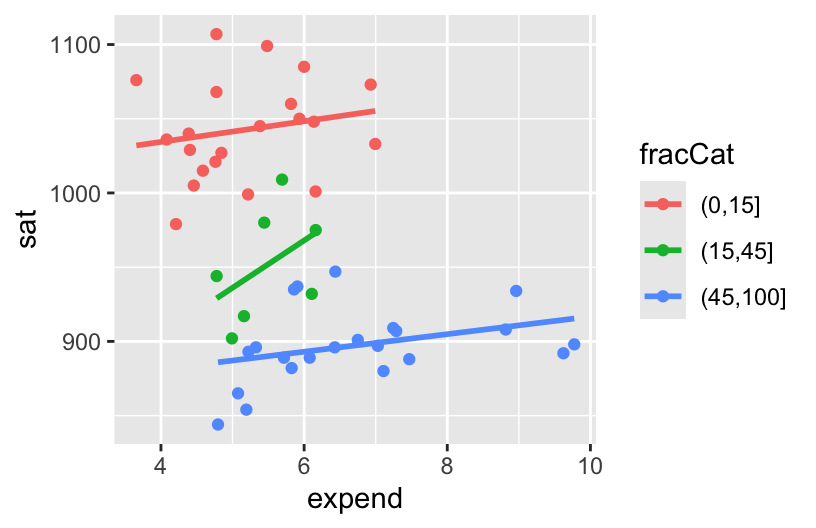
6 What story does your graphic tell? Does it still seem that SAT scores decrease as spending increases?
The graphic shows different trends between SAT scores and spending across categories (fracCat). In the lowest fraction group (red), SAT scores are higher with a slight positive trend as spending increases. In the middle group (green), there’s a stronger upward trend. In the highest fraction group (blue), SAT scores are lower, but still show a slight positive trend with increased spending.
Part d
Putting all of this together, explain this example of Simpson’s Paradox. That is, why did it appear that SAT scores decrease as spending increases even though the opposite is true?
When looking at the data without considering group categories (fracCat), SAT scores appeared to decrease as spending increased. This was due to a confounding factor: the proportion of disadvantaged students (fracCat) in each group.
When controlling for fracCat, the relationship between SAT scores and spending changes direction: within each category, higher spending actually correlates with higher SAT scores.
6.1 Exercises (optional)
Exercise 6: Heat Maps
As usual, we’ve only just scratched the surface! There are lots of other data viz techniques for exploring multivariate relationships. Let’s start with a heat map.
Part a
Run the chunks below. Check out the code, but don’t worry about every little detail! NOTES:
This is not part of the ggplot() grammar, making it a bit complicated.
If you’re curious about what a line in the plot does, comment it out (#) and check out what happens!
In the plot, for each state (row), each variable (column) is scaled to indicate whether the state has a relative high value (yellow), a relatively low value (purple), or something in between (blues/greens).
You can also play with the color scheme. Type ?cm.colors in the console to learn about various options.
We’ll improve the plot later, so don’t spend too much time trying to learn something from this plot.
# Remove the "State" column and use it to label the rows# Then scale the variablesplot_data <- education |>column_to_rownames("State") |>data.matrix() |>scale()# Load the gplots package needed for heatmapslibrary(gplots)# Construct heatmap 1heatmap.2(plot_data,dendrogram ="none",Rowv =NA, scale ="column",keysize =0.7, density.info ="none",col =hcl.colors(256), margins =c(10, 20),colsep =c(1:7), rowsep = (1:50), sepwidth =c(0.05, 0.05),sepcolor ="white", trace ="none")
# Construct heatmap 2heatmap.2(plot_data,dendrogram ="none",Rowv =TRUE, ### WE CHANGED THIS FROM NA TO TRUEscale ="column",keysize =0.7, density.info ="none",col =hcl.colors(256), margins =c(10, 20),colsep =c(1:7), rowsep = (1:50), sepwidth =c(0.05, 0.05),sepcolor ="white", trace ="none")
# Construct heatmap 3heatmap.2(plot_data,dendrogram ="row", ### WE CHANGED THIS FROM "none" TO "row"Rowv =TRUE, scale ="column",keysize =0.7, density.info ="none",col =hcl.colors(256), margins =c(10, 20),colsep =c(1:7), rowsep = (1:50), sepwidth =c(0.05, 0.05),sepcolor ="white", trace ="none")
Part b
In the final two plots, the states (rows) are rearranged by similarity with respect to these education metrics. The final plot includes a dendrogram which further indicates clusters of similar states. In short, states that have a shorter path to connection are more similar than others.
Putting this all together, what insight do you gain about the education trends across U.S. states? Which states are similar? In what ways are they similar? Are there any outliers with respect to 1 or more of the education metrics?
Exercise 7: Star plots
Like heat maps, star plots indicate the relative scale of each variable for each state. Thus, we can use star maps to identify similar groups of states, and unusual states!
Part a
Construct and check out the star plot below. Note that each state has a “pie”, with each segment corresponding to a different variable. The larger a segment, the larger that variable’s value is in that state. For example:
Check out Minnesota. How does Minnesota’s education metrics compare to those in other states? What metrics are relatively high? Relatively low?
What states appear to be similar? Do these observations agree with those that you gained from the heat map?
Finally, let’s plot the state stars by geographic location! What new insight do you gain here?!
stars(plot_data,flip.labels =FALSE,locations =data.matrix(as.data.frame(state.center)), # added external data to arrange by geo locationkey.loc =c(-110, 28),cex =1, draw.segments =TRUE)
6.2 Solutions
Click for Solutions
library(tidyverse)# Import dataweather <-read.csv("https://mac-stat.github.io/data/weather_3_locations.csv") |>mutate(date =as.Date(date)) # Check out the first 6 rows# What are the units of observation?head(weather)
date location mintemp maxtemp rainfall evaporation sunshine
1 2020-01-01 Wollongong 17.1 23.1 0 NA NA
2 2020-01-02 Wollongong 17.7 24.2 0 NA NA
3 2020-01-03 Wollongong 19.7 26.8 0 NA NA
4 2020-01-04 Wollongong 20.4 35.5 0 NA NA
5 2020-01-05 Wollongong 19.8 21.4 0 NA NA
6 2020-01-06 Wollongong 18.3 22.9 0 NA NA
windgustdir windgustspeed winddir9am winddir3pm windspeed9am windspeed3pm
1 SSW 39 SSW SSE 20 15
2 SSW 37 S ENE 13 15
3 NE 41 NNW NNE 7 17
4 SSW 78 NE NNE 15 17
5 SSW 57 SSW S 31 35
6 NE 35 ESE NE 17 20
humidity9am humidity3pm pressure9am pressure3pm cloud9am cloud3pm temp9am
1 69 64 1014.9 1014.0 8 1 19.1
2 72 54 1020.1 1017.7 7 1 19.8
3 72 71 1017.5 1013.0 6 NA 23.4
4 77 69 1008.8 1003.9 NA NA 24.5
5 70 75 1018.9 1019.9 NA 7 20.7
6 71 71 1021.2 1018.2 NA NA 20.9
temp3pm raintoday risk_mm raintomorrow
1 22.9 No 0.0 No
2 23.6 No 0.0 No
3 25.7 No 0.0 No
4 26.7 No 0.0 No
5 20.0 No 0.0 No
6 22.6 No 0.8 No
# How many data points do we have? nrow(weather)
[1] 2367
# What type of variables do we have?str(weather)
'data.frame': 2367 obs. of 24 variables:
$ date : Date, format: "2020-01-01" "2020-01-02" ...
$ location : chr "Wollongong" "Wollongong" "Wollongong" "Wollongong" ...
$ mintemp : num 17.1 17.7 19.7 20.4 19.8 18.3 19.9 20.1 19.8 20.5 ...
$ maxtemp : num 23.1 24.2 26.8 35.5 21.4 22.9 25.6 23.2 23.1 25.4 ...
$ rainfall : num 0 0 0 0 0 0 0.8 1.6 0 0 ...
$ evaporation : num NA NA NA NA NA NA NA NA NA NA ...
$ sunshine : num NA NA NA NA NA NA NA NA NA NA ...
$ windgustdir : chr "SSW" "SSW" "NE" "SSW" ...
$ windgustspeed: int 39 37 41 78 57 35 44 41 39 56 ...
$ winddir9am : chr "SSW" "S" "NNW" "NE" ...
$ winddir3pm : chr "SSE" "ENE" "NNE" "NNE" ...
$ windspeed9am : int 20 13 7 15 31 17 30 31 24 19 ...
$ windspeed3pm : int 15 15 17 17 35 20 7 33 26 39 ...
$ humidity9am : int 69 72 72 77 70 71 76 77 76 79 ...
$ humidity3pm : int 64 54 71 69 75 71 72 76 79 76 ...
$ pressure9am : num 1015 1020 1018 1009 1019 ...
$ pressure3pm : num 1014 1018 1013 1004 1020 ...
$ cloud9am : int 8 7 6 NA NA NA NA 8 NA NA ...
$ cloud3pm : int 1 1 NA NA 7 NA NA NA NA NA ...
$ temp9am : num 19.1 19.8 23.4 24.5 20.7 20.9 22.9 21.3 21.2 23 ...
$ temp3pm : num 22.9 23.6 25.7 26.7 20 22.6 24.9 22.2 22.2 25.1 ...
$ raintoday : chr "No" "No" "No" "No" ...
$ risk_mm : num 0 0 0 0 0 0.8 1.6 0 0 1 ...
$ raintomorrow : chr "No" "No" "No" "No" ...
Example 1
ggplot(weather, aes(x = temp3pm)) +geom_density()
Example 2
# Plot 1 (no facets & starting from a density plot of temp3pm)ggplot(weather, aes(x = temp3pm, fill = location)) +geom_density(alpha =0.5)
# Plot 2 (no facets or densities)ggplot(weather, aes(y = temp3pm, x = location)) +geom_boxplot()
# How often does it raintoday?# Fill your geometric layer with the color blue.ggplot(woll, aes(x = raintoday)) +geom_bar(fill ="blue")
# If it does raintoday, what does this tell us about raintomorrow?# Use your intuition firstggplot(woll, aes(x = raintoday)) +geom_bar(aes(fill = raintomorrow))
ggplot(woll, aes(x = raintoday, fill = raintomorrow)) +geom_bar()
# Now compare different approaches# Default: stacked barsggplot(woll, aes(x = raintoday, fill = raintomorrow)) +geom_bar()
# Proportional bars# position = "fill" refers to filling the frame, nothing to do with the color-related fillggplot(woll, aes(x = raintoday, fill = raintomorrow)) +geom_bar(position ="fill")
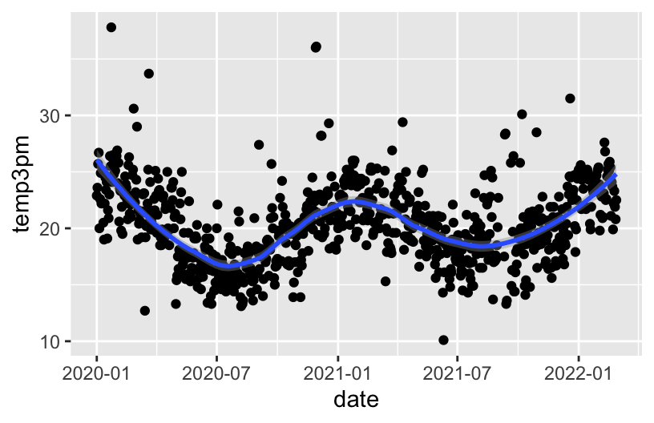
Example 4
# THINK: What variable goes on the y-axis?# For the curve, try adding span = 0.5 to tweak the curvatureggplot(woll, aes(y = temp3pm, x = date)) +geom_point() +geom_smooth(span =0.5)
# Instead of a curve that captures the general TREND,# draw a line that illustrates the movement of RAW temperatures from day to day# NOTE: We haven't learned this geom yet! Guess.ggplot(woll, aes(y = temp3pm, x = date)) +geom_line()
Example 5
# Plot temp3pm vs temp9am# Change the code in order to indicate the location to which each data point correspondsggplot(weather, aes(y = temp3pm, x = temp9am, color = location)) +geom_point()
# Change the code in order to indicate the location to which each data point corresponds# AND identify the days on which it rained / didn't raintodayggplot(weather, aes(y = temp3pm, x = temp9am, color = location)) +geom_point() +facet_wrap(~ raintoday)
# How many ways can you think to make that plot of temp3pm vs temp9am with info about location and rain?# Play around!ggplot(weather, aes(y = temp3pm, x = temp9am, color = location, shape = raintoday)) +geom_point()
Example 6
# Change the code in order to construct a line plot of temp3pm vs date for each separate location (no points!)ggplot(weather, aes(y = temp3pm, x = date, color = location)) +geom_line()
Example 7
# Plot the relationship of raintomorrow & raintoday# Change the code in order to indicate this relationship by locationggplot(weather, aes(x = raintoday, fill = raintomorrow)) +geom_bar(position ="fill") +facet_wrap(~ location)
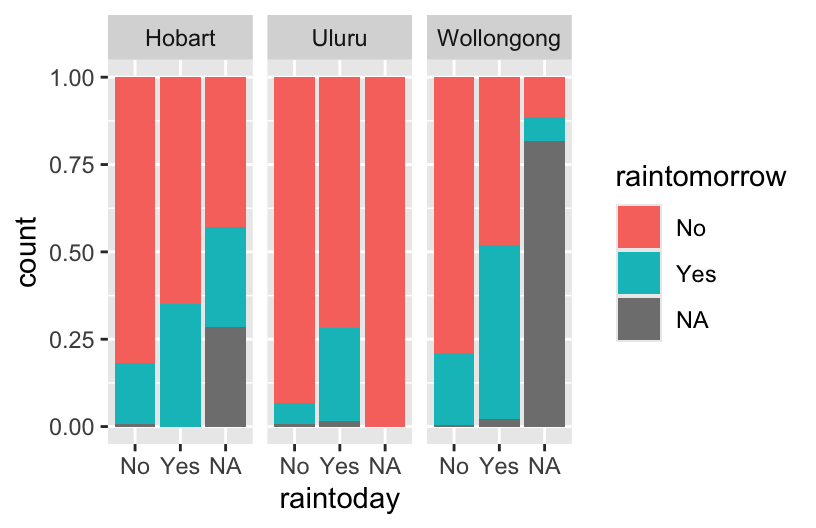
Exercise 1: SAT scores
Part a
# A histogram would work too!ggplot(education, aes(x = sat)) +geom_density()
Part b
average SAT scores range from roughly 800 to 1100. They appear bi-modal.
Exercise 2: SAT Scores vs Per Pupil Spending & SAT Scores vs Salaries
Part a
# Construct a plot of sat vs expend# Include a "best fit linear regression model"ggplot(education, aes(y = sat, x = expend)) +geom_point() +geom_smooth(method ="lm")
# Construct a plot of sat vs salary# Include a "best fit linear regression model"ggplot(education, aes(y = sat, x = salary)) +geom_point() +geom_smooth(method ="lm")
Part b
The higher the student expenditures and teacher salaries, the worse the SAT performance.
Exercise 3: SAT Scores vs Per Pupil Spending and Teacher Salaries
ggplot(education, aes(y = sat, x = salary, color = expend)) +geom_point() +geom_smooth(method ="lm")
Exercise 4: Another Way to Incorporate Scale
ggplot(education, aes(y = sat, x = salary, color =cut(expend, 2))) +geom_point() +geom_smooth(se =FALSE, method ="lm")
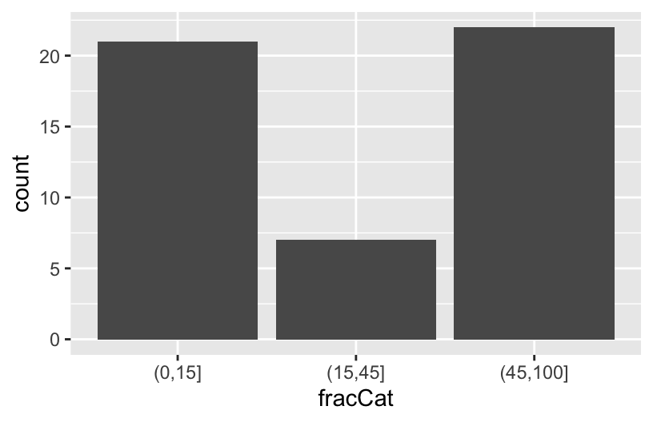
ggplot(education, aes(y = sat, x = salary, color =cut(expend, 3))) +geom_point() +geom_smooth(se =FALSE, method ="lm")
States with lower salaries and expenditures tend to have higher SAT scores.
Exercise 5: Finally an Explanation
Part a
ggplot(education, aes(x = fracCat)) +geom_bar()
Part b
The more students in a state that take the SAT, the lower the average scores tend to be. This is probably related to self-selection.
ggplot(education, aes(x = sat, fill = fracCat)) +geom_density(alpha =0.5)
Part c
When we control for the fraction of students that take the SAT, SAT scores increase with expenditure.
ggplot(education, aes(y = sat, x = expend, color = fracCat)) +geom_point() +geom_smooth(method ="lm")
Part d
Student participation tends to be lower among states with lower expenditures (which are likely also the states with higher ed institutions that haven’t historically required the SAT). Those same states tend to have higher SAT scores because of the self-selection of who participates.
Exercise 6: Heat Maps
Part a
# Remove the "State" column and use it to label the rows# Then scale the variablesplot_data <- education |>column_to_rownames("State") |>data.matrix() |>scale()# Load the gplots package needed for heatmapslibrary(gplots)# Construct heatmap 1heatmap.2(plot_data,dendrogram ="none",Rowv =NA, scale ="column",keysize =0.7, density.info ="none",col =hcl.colors(256), margins =c(10, 20),colsep =c(1:7), rowsep = (1:50), sepwidth =c(0.05, 0.05),sepcolor ="white", trace ="none")
# Construct heatmap 2heatmap.2(plot_data,dendrogram ="none",Rowv =TRUE, ### WE CHANGED THIS FROM NA TO TRUEscale ="column",keysize =0.7, density.info ="none",col =hcl.colors(256), margins =c(10, 20),colsep =c(1:7), rowsep = (1:50), sepwidth =c(0.05, 0.05),sepcolor ="white", trace ="none")
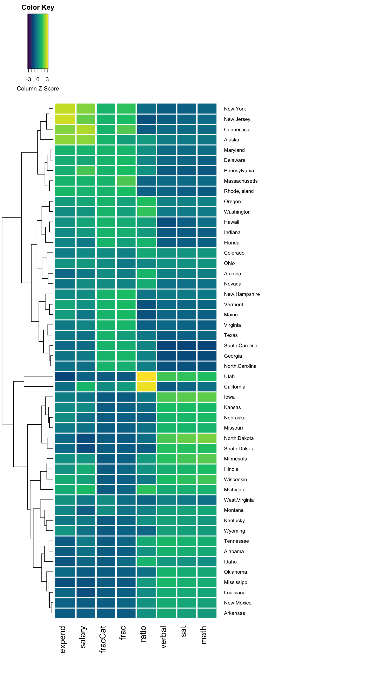
# Construct heatmap 3heatmap.2(plot_data,dendrogram ="row", ### WE CHANGED THIS FROM "none" TO "row"Rowv =TRUE, scale ="column",keysize =0.7, density.info ="none",col =hcl.colors(256), margins =c(10, 20),colsep =c(1:7), rowsep = (1:50), sepwidth =c(0.05, 0.05),sepcolor ="white", trace ="none")
Part b
Similar values in verbal, math, and sat.
High contrast (an inverse relationship) verbal/math/sat scores and the fraction of students that take the SAT.
Outliers of Utah and California in ratio (more students per teacher).
While grouped, fraction and salary are not as similar to each other as the sat scores; it is also interesting to notice states that have high ratios have generally low expenditures per student.
Exercise 7: Star Plots
Part a
MN is high on the SAT performance related metrics and low on everything else. MN is similar to Iowa, Kansas, Mississippi, Missouri, the Dakotas…
When the states are in geographical ordering, we’d notice more easily that states in similar regions of the U.S. have similar patterns of these variables.
stars(plot_data,flip.labels =FALSE,locations =data.matrix(as.data.frame(state.center)), # added external data to arrange by geo locationkey.loc =c(-110, 28),cex =1, draw.segments =TRUE)
Source Code
---title: "Multivariate Visualization"number-sections: trueexecute: warning: falsefig-height: 2.75fig-width: 4.25fig-env: 'figure'fig-pos: 'h'fig-align: centercode-fold: false---::: {.callout-caution title="Learning Goals"}**Warm-up (together)**- Review univariate & bivariate viz ideas and code.**Exercises (in groups)**- Explore how to visualize *relationships* between *more than* 2 variables.:::::: {.callout-note title="Additional Resources"} - [More ggplot (YouTube)](https://www.youtube.com/watch?v=bkAJ3FAAGqA) by Lisa Lendway:::::: {.callout-important title="Instructions"}**General**- Be kind to yourself.- Collaborate with and be kind to others. You are expected to work together as a group.- Ask questions. Remember that we won't discuss these exercises as a class.**Activity Specific**Help each other with the following:- Create a new Quarto document in the activities folder of your portfolio project and do not forgot to include it in `_quarto.yml` file. Then click the `</> Code` link at the top right corner of this page and copy the code into the created Quarto document. This is where you'll take notes. Remember that the portfolio is yours, so take notes in whatever way is best for you.- **Don't start the Exercises section before we get there as a class.** First, engage in class discussion and eventually collaborate with your group on the exercises!- There are some coding "intuition checks" along the way. The goal here is to start connecting to and expanding upon the structure of our `ggplot()` code. Don't spend more than a few minutes trying these out. If you don't get it, no problem! You can move on and learn the code in the next exercise.- The goal is for every student to finish the required exercises before we meet again. After that, choose your own adventure! - If you're feeling like the required exercises gave you plenty to chew on, simply stop the activity. Go back and review the material you learned. *You never need to think about the optional exercises.* - If you're feeling like your brain still has some space after completing the required exercises, try the optional ones. These exercises are either "bonus" visualizations or intuition checks about some material coming up.:::## ReviewLet's review some *univariate* and *bivariate* plotting concepts using some daily weather data from Australia. This is a subset of the data from the `weatherAUS` data in the `rattle` package.```{r}library(tidyverse)# Import dataweather <-read.csv("https://mac-stat.github.io/data/weather_3_locations.csv") |>mutate(date =as.Date(date)) # Check out the first 6 rows# What are the units of observation?head(weather,6)# How many data points do we have? nrow(weather)# What type of variables do we have?str(weather)```### Example 1 {-}Construct a plot that allows us to examine how `temp3pm` varies.```{r}#Add a density plot for quantitive ggplot(weather, aes(x=temp3pm)) +geom_density(color ="black", fill ="orange")``````{r}### Example 2 {-}#Construct 3 plots that address the following research question:``````{r}# Plot 1 (no facets & starting from a density plot of temp3pm)ggplot(weather, aes(x = temp3pm, fill = location)) +geom_density(alpha =0.5)``````{r}# Plot 2 (no facets or densities)ggplot(weather, aes(y = temp3pm, x = location)) +geom_boxplot(fill ="yellow")``````{r}# Plot 3 (facets)ggplot(weather, aes(x = temp3pm, fill = location)) +geom_density(alpha =0.5) +facet_wrap(~ location)``````{r}library(ggridges)ggplot(weather, aes(x = temp3pm, y = location)) +geom_density_ridges(aes(fill = location, alpha =0.5)) +labs(x ="Temperature at 3 PM",y ="Location",title ="Temperature Distributions by Location at 3 PM" ) +theme_minimal()```# How do afternoon temperatures (`temp3pm`) differ by `location`?- the temp3pm differe significantly among cities.- Hobart: Cooler, with temperatures mostly around 15-20°C.- Uluru: Hotter and variable, ranging from 15-40°C.- Wollongong: Consistent around 20°C.#### Reflection {-}- Temperatures tend to be highest, and most variable, in Uluru. There, they range from \~10 to \~45 with a typical temp around \~30 degrees.- Temperatures tend to be lowest in Hobart. There, they range from \~5 to \~45 with a typical temp around \~15 degrees.- Wollongong temps are in between and are the least variable from day to day.**SUBTLETIES: Defining `fill` or `color` by a variable**How we define the `fill` or `color` depends upon whether we're defining it by a named color or by some variable in our dataset. For example:- `geom___(fill = "blue")` \ *named* colors are defined outside the `aes`thetics and put in quotes- `geom___(aes(fill = variable))` or `ggplot(___, aes(fill = variable))` \colors/fills defined by a *variable* are defined inside the `aes`thetics### Example 3 {-}Let's consider Wollongong alone:```{r}# Don't worry about the syntax (we'll learn it soon)woll <- weather |>filter(location =="Wollongong") |>mutate(date =as.Date(date)) ``````{r}# How often does it raintoday?# Fill your geometric layer with the color blue.ggplot(woll, aes(x = raintoday))+geom_bar(fill ="blue")``````{r}# If it does raintoday, what does this tell us about raintomorrow?# Use your intuition firstggplot(woll, aes(x = raintoday)) +geom_bar(aes(fill = raintomorrow))# fill the raintoday with the probablity of raintomorrow``````{r fig.width= 8, fig.height= 8}# Now compare different approaches# we get the same result. # Default: stacked barsggplot(woll, aes(x = raintoday, fill = raintomorrow)) + geom_bar()``````{r fig.width= 8, fig.height= 8}# Side-by-side barsggplot(woll, aes(x = raintoday, fill = raintomorrow)) + geom_bar(position = "dodge")#geom_bar(position = "dodge") creates a bar chart where the bars for different groups are placed side by side (horizontally dodged) instead of stacked on top of each other. This makes it easier to compare the categories within each group.``````{r}# Proportional bars# position = "fill" refers to filling the frame, nothing to do with the color-related fillggplot(woll, aes(x = raintoday, fill = raintomorrow)) +geom_bar(position ="fill")```#### Reflection {-}There's often not one "best plot", but a *combination* of plots that provide a complete picture:- The stacked and side-by-side bars reflect that on most days, it does *not* rain.- The proportional / filled bars *lose* that information, but make it easier to compare proportions: it's more likely to rain tomorrow if it also rains today.### Example 4 {-}Construct a plot that illustrates how 3pm temperatures (temp3pm) vary by `date` in Wollongong. Represent each day on the plot and use a curve/line to help highlight the trends.```{r fig.width= 8, fig.height= 8}# THINK: What variable goes on the y-axis?# For the curve, try adding span = 0.5 to tweak the curvatureggplot(woll, aes(x=date, y = temp3pm))+ geom_point(color = "purple")+ geom_smooth(span = 0.5)``````{r fig.width= 8, fig.height= 8}# Instead of a curve that captures the general TREND,# draw a line that illustrates the movement of RAW temperatures from day to day# NOTE: We haven't learned this geom yet! Guess.ggplot(woll, aes(y = temp3pm, x = date)) + geom_line(color="red") + geom_smooth()# It was easy ```**NOTE:** A line plot isn't always appropriate! It can be useful in situations like this, when our data are chronological.#### Reflection {-}There's a seasonal / cyclic behavior in temperatures -- they're highest in January (around 23 degrees) and lowest in July (around 16 degrees). There are also some outliers -- some abnormally hot and cold days.## New StuffNext, let's consider the entire `weather` data for all 3 locations. The addition of `location` adds a 3rd variable into our research questions:- How does the relationship between `raintoday` and `raintomorrow` vary by `location`?- How does the behavior of `temp3pm` over `date` vary by `location`?- And so on.Thus far, we've focused on the following components of a plot:- setting up a **frame**- adding **layers** / geometric elements- splitting the plot into **facets** for different groups / categories- change the **theme**, e.g. axis labels, color, fillWe'll have to think about all of this, along with **scales**. Scales change the color, fill, size, shape, or other properties according to the levels of a new *variable*. This is different than just assigning scale by, for example, `color = "blue"`.Work on the examples below in your groups. Check in with your intuition! We'll then discuss as a group as relevant.### Example 5 {-}```{r fig.width= 8, fig.height= 8}# Plot temp3pm vs temp9am# Change the code in order to indicate the location to which each data point correspondsggplot(weather, aes(y = temp3pm, x = temp9am, color = location)) + geom_point()# you can also try another way too. ggplot(weather, aes(y = temp3pm, x = temp9am)) + geom_point(aes(color = location))``````{r fig.width= 8, fig.height= 8}# Change the code in order to indicate the location to which each data point corresponds# AND identify the days on which it rained / didn't raintodayggplot(weather, aes(y = temp3pm, x = temp9am)) + geom_point(aes(color = location))+ facet_wrap(~ raintoday)# divide based on (yes, no and NA) and than write the location on top of it. ``````{r fig.width= 8, fig.height= 8}# How many ways can you think to make that plot of temp3pm vs temp9am with info about location and rain?# Play around!# Second wayggplot(weather, aes(x=temp9am, y = temp3pm, color = location))+ geom_point()+ facet_wrap(~raintoday)``````{r fig.width= 8, fig.height= 8}# Third Way:ggplot(weather, aes(x=temp9am, y=temp3pm, color = location, shape = raintoday)) +geom_point()```### Example 6 {-}```{r}#Change the code in order to construct a line plot of temp3pm vs date for each separate location (no points!)#One way :ggplot(weather, aes(y = temp3pm, x = date, color = location)) +geom_line() +geom_smooth(color="black", size =0.1) # should come after the "facet_wrap(~location) " so it apply the line for each graph.``````{r}# Another way to do it. ggplot(weather, aes(y = temp3pm, x = date)) +geom_line(color="red") +facet_wrap(~location) +geom_smooth(color="black", size =0.5) # should come after the "facet_wrap(~location) " so it apply the line for each graph.```### Example 7 {-}```{r}# Plot the relationship of raintomorrow & raintoday# Change the code in order to indicate this relationship by locationggplot(weather, aes(x = raintoday, fill = raintomorrow)) +geom_bar(position ="fill") +facet_wrap(~ location)```::: {.callout-tip title="How to Not Get Overwhelmed?"}There's no end to the number and type of visualizations you *could* make. And it's important to not just throw spaghetti at the wall until something sticks. [FlowingData](http://flowingdata.com/2017/01/24/one-dataset-visualized-25-ways/) shows that one dataset can be visualized *many* ways, and makes good recommendations for data viz workflow, which we modify and build upon here:- **Identify simple research questions.**\ What do you want to understand about the variables or the relationships among them?- **Start with the basics and work incrementally.** - Identify what variables you want to include in your plot and what structure these have (eg: categorical, quantitative, dates) - Start simply. Build a plot of just 1 of these variables, or the relationship between 2 of these variables. - Set up a plotting frame and add just **one geometric layer at a time**. - Start tweaking: add whatever new variables you want to examine,- **Ask your plot questions.** - What questions *does* your plot answer? What questions are left *unanswered* by your plot? - What *new* questions does your plot spark / inspire? - Do you have the viz tools to answer these questions, or might you learn more?- **Focus.**\ Reporting a large number of visualizations can overwhelm the audience and obscure your conclusions. Instead, pick out a focused yet comprehensive set of visualizations.:::## Exercises (required)### The story {-}Though far from a perfect assessment of academic preparedness, SAT scores have historically been used as one measurement of a state's education system. The `education` dataset contains various education variables for each state:```{r}# Import and check out dataeducation <-read.csv("https://mac-stat.github.io/data/sat.csv")head(education)```A codebook is provided by Danny Kaplan who also made these data accessible:### Exercise 1: SAT scores {-}#### Part a {-}Construct a plot of how the average `sat` scores vary from state to state. (Just use 1 variable -- `sat` not `State`!)```{r}ggplot(education, aes(x=sat)) +geom_density(fill ="orange")```#### Part b {-}Summarize your observations from the plot. Comment on the basics: range, typical outcomes, shape. (Any theories about what might explain this non-normal shape?)- average SAT scores range from roughly 800 to 1100. They appear bi-modal.### Exercise 2: SAT Scores vs Per Pupil Spending & SAT Scores vs Salaries {-}The first question we'd like to answer is: Can the variability in `sat` scores from state to state be partially explained by how much a state spends on education, specifically its per pupil spending (`expend`) and typical teacher `salary`?#### Part a {-}```{r}# Construct a plot of sat vs expend# Include a "best fit linear regression model" (HINT: method = "lm")ggplot(education, aes( y = sat, x = expend)) +geom_point(color="red", alpha =0.5) +geom_smooth(method ="lm")``````{r}# Construct a plot of sat vs salary# Include a "best fit linear regression model" (HINT: method = "lm")ggplot(education, aes(x=salary, y=sat))+geom_point(color ="purple", alpha =0.9) +geom_smooth(method ="lm")```#### Part b {-}What are the relationship trends between SAT scores and spending? Is there anything that surprises you?There is a strong, negative relationship between noth amoung of spending and salary with sat outcomes. The graphs show that as both kind of spending increase, the SAT score outcomes decrease. This is surpise find becuase it is counter intuitive. Mostly the logic is that more spending, better SAT score outcome.### Exercise 3: SAT Scores vs Per Pupil Spending *and* Teacher Salaries {-}Construct *one* visualization of the relationship of `sat` with `salary` *and* `expend`. HINT: Start with just 2 variables and tweak that code to add the third variable. Try out a few things!```{r}# one way ggplot(education, aes(x= salary, color = expend , y=sat))+geom_point(alpha =0.9) +geom_smooth(method ="lm")```### Exercise 4: Another way to Incorporate Scale {-}It can be tough to distinguish color scales and size scales for quantitative variables. Another option is to *discretize* a quantitative variable, or basically cut it up into *categories*.Construct the plot below. Check out the code and think about what's happening here. What happens if you change "2" to "3"?```{r }ggplot(education, aes(y = sat, x = salary, color = cut(expend, 2))) + geom_point() + geom_smooth(se = FALSE, method = "lm")```Describe the trivariate relationship between `sat`, `salary`, and `expend`.States with lower salaries and expenditures tend to have higher SAT scores.### Exercise 5: Finally an Explanation {-}It's strange that SAT scores *seem* to decrease with spending. But we're leaving out an important variable from our analysis: the fraction of a state's students that actually take the SAT. The `fracCat` variable indicates this fraction: `low` (under 15% take the SAT), `medium` (15-45% take the SAT), and `high` (at least 45% take the SAT).#### Part a {-}Build a univariate viz of `fracCat` to better understand how many states fall into each category.```{r}ggplot(education, aes(x= fracCat))+geom_bar(fill="orange")```#### Part b {-}Build 2 bivariate visualizations that demonstrate the relationship between `sat` and `fracCat`. What story does your graphic tell and why does this make contextual sense?```{r}ggplot(education, aes(x= sat, fill= fracCat)) +geom_density()``````{r}#### Part c {-}# Make a trivariate visualization that demonstrates the relationship of `sat` with `expend` AND `fracCat`. Highlight the differences in `fracCat` groups through color AND unique trend lines. ggplot(education, aes(y = sat, x = expend, color = fracCat)) +geom_point() +geom_smooth(se =FALSE, method ="lm")```# What story does your graphic tell? Does it still seem that SAT scores decrease as spending increases?The graphic shows different trends between SAT scores and spending across categories (fracCat).In the lowest fraction group (red), SAT scores are higher with a slight positive trend as spending increases.In the middle group (green), there's a stronger upward trend.In the highest fraction group (blue), SAT scores are lower, but still show a slight positive trend with increased spending.#### Part d {-}Putting all of this together, explain this example of **Simpson’s Paradox**. That is, why did it appear that SAT scores decrease as spending increases even though the *opposite* is true?When looking at the data without considering group categories (fracCat), SAT scores appeared to decrease as spending increased. This was due to a confounding factor: the proportion of disadvantaged students (fracCat) in each group.When controlling for fracCat, the relationship between SAT scores and spending changes direction: within each category, higher spending actually correlates with higher SAT scores.## Exercises (optional)### Exercise 6: Heat Maps {-}As usual, we've only just scratched the surface! There are lots of other data viz techniques for exploring multivariate relationships. Let's start with a **heat map**.#### Part a {-}Run the chunks below. Check out the code, but don't worry about every little detail! NOTES:- This is *not* part of the `ggplot()` grammar, making it a bit complicated.- If you're curious about what a line in the plot does, comment it out (`#`) and check out what happens!- In the plot, for each state (row), each variable (column) is scaled to indicate whether the state has a relative high value (yellow), a relatively low value (purple), or something in between (blues/greens).- You can also play with the color scheme. Type `?cm.colors` in the *console* to learn about various options.- We'll improve the plot later, so don't spend too much time trying to learn something from this plot.```{r eval = FALSE, fig.width = 8, fig.height = 15}# Remove the "State" column and use it to label the rows# Then scale the variablesplot_data <- education |> column_to_rownames("State") |> data.matrix() |> scale()# Load the gplots package needed for heatmapslibrary(gplots)# Construct heatmap 1heatmap.2(plot_data, dendrogram = "none", Rowv = NA, scale = "column", keysize = 0.7, density.info = "none", col = hcl.colors(256), margins = c(10, 20), colsep = c(1:7), rowsep = (1:50), sepwidth = c(0.05, 0.05), sepcolor = "white", trace = "none")``````{r eval = FALSE, fig.width = 8, fig.height = 15}# Construct heatmap 2heatmap.2(plot_data, dendrogram = "none", Rowv = TRUE, ### WE CHANGED THIS FROM NA TO TRUE scale = "column", keysize = 0.7, density.info = "none", col = hcl.colors(256), margins = c(10, 20), colsep = c(1:7), rowsep = (1:50), sepwidth = c(0.05, 0.05), sepcolor = "white", trace = "none")``````{r eval = FALSE, fig.width = 8, fig.height = 15}# Construct heatmap 3heatmap.2(plot_data, dendrogram = "row", ### WE CHANGED THIS FROM "none" TO "row" Rowv = TRUE, scale = "column", keysize = 0.7, density.info = "none", col = hcl.colors(256), margins = c(10, 20), colsep = c(1:7), rowsep = (1:50), sepwidth = c(0.05, 0.05), sepcolor = "white", trace = "none")```#### Part b {-}In the final two plots, the states (rows) are rearranged by similarity with respect to these education metrics. The *final* plot includes a **dendrogram** which further indicates *clusters* of similar states. In short, states that have a shorter path to connection are more similar than others.Putting this all together, what insight do you gain about the education trends across U.S. states? Which states are similar? In what ways are they similar? Are there any outliers with respect to 1 or more of the education metrics?### Exercise 7: Star plots {-}Like heat maps, star plots indicate the relative scale of each variable for each state. Thus, we can use star maps to identify similar groups of states, and unusual states!#### Part a {-}Construct and check out the star plot below. Note that each state has a "pie", with each segment corresponding to a different variable. The larger a segment, the larger that variable's value is in that state. For example:- Check out Minnesota. How does Minnesota's education metrics compare to those in other states? What metrics are relatively high? Relatively low?- What states appear to be similar? Do these observations agree with those that you gained from the heat map?```{r eval = FALSE, fig.width = 10, fig.height = 20}stars(plot_data, flip.labels = FALSE, key.loc = c(10, 1.5), cex = 1, draw.segments = TRUE)```#### Part b {-}Finally, let's plot the state stars by *geographic* location! What new insight do you gain here?!```{r eval = FALSE, fig.width = 10, fig.height = 7}stars(plot_data, flip.labels = FALSE, locations = data.matrix(as.data.frame(state.center)), # added external data to arrange by geo location key.loc = c(-110, 28), cex = 1, draw.segments = TRUE)```## Solutions<details><summary>Click for Solutions</summary>```{r}library(tidyverse)# Import dataweather <-read.csv("https://mac-stat.github.io/data/weather_3_locations.csv") |>mutate(date =as.Date(date)) # Check out the first 6 rows# What are the units of observation?head(weather)# How many data points do we have? nrow(weather)# What type of variables do we have?str(weather)```### Example 1 {-}```{r}ggplot(weather, aes(x = temp3pm)) +geom_density()```### Example 2 {-}```{r}# Plot 1 (no facets & starting from a density plot of temp3pm)ggplot(weather, aes(x = temp3pm, fill = location)) +geom_density(alpha =0.5)``````{r}# Plot 2 (no facets or densities)ggplot(weather, aes(y = temp3pm, x = location)) +geom_boxplot()``````{r}# Plot 3 (facets)ggplot(weather, aes(x = temp3pm, fill = location)) +geom_density(alpha =0.5) +facet_wrap(~ location)```### Example 3 {-}```{r}# How often does it raintoday?# Fill your geometric layer with the color blue.ggplot(woll, aes(x = raintoday)) +geom_bar(fill ="blue")``````{r}# If it does raintoday, what does this tell us about raintomorrow?# Use your intuition firstggplot(woll, aes(x = raintoday)) +geom_bar(aes(fill = raintomorrow))ggplot(woll, aes(x = raintoday, fill = raintomorrow)) +geom_bar()``````{r}# Now compare different approaches# Default: stacked barsggplot(woll, aes(x = raintoday, fill = raintomorrow)) +geom_bar()``````{r}# Side-by-side barsggplot(woll, aes(x = raintoday, fill = raintomorrow)) +geom_bar(position ="dodge")``````{r}# Proportional bars# position = "fill" refers to filling the frame, nothing to do with the color-related fillggplot(woll, aes(x = raintoday, fill = raintomorrow)) +geom_bar(position ="fill")```### Example 4 {-}```{r}# THINK: What variable goes on the y-axis?# For the curve, try adding span = 0.5 to tweak the curvatureggplot(woll, aes(y = temp3pm, x = date)) +geom_point() +geom_smooth(span =0.5)``````{r}# Instead of a curve that captures the general TREND,# draw a line that illustrates the movement of RAW temperatures from day to day# NOTE: We haven't learned this geom yet! Guess.ggplot(woll, aes(y = temp3pm, x = date)) +geom_line()```### Example 5 {-}```{r}# Plot temp3pm vs temp9am# Change the code in order to indicate the location to which each data point correspondsggplot(weather, aes(y = temp3pm, x = temp9am, color = location)) +geom_point()``````{r}# Change the code in order to indicate the location to which each data point corresponds# AND identify the days on which it rained / didn't raintodayggplot(weather, aes(y = temp3pm, x = temp9am, color = location)) +geom_point() +facet_wrap(~ raintoday)``````{r}# How many ways can you think to make that plot of temp3pm vs temp9am with info about location and rain?# Play around!ggplot(weather, aes(y = temp3pm, x = temp9am, color = location, shape = raintoday)) +geom_point()```### Example 6 {-}```{r}# Change the code in order to construct a line plot of temp3pm vs date for each separate location (no points!)ggplot(weather, aes(y = temp3pm, x = date, color = location)) +geom_line()```### Example 7 {-}```{r}# Plot the relationship of raintomorrow & raintoday# Change the code in order to indicate this relationship by locationggplot(weather, aes(x = raintoday, fill = raintomorrow)) +geom_bar(position ="fill") +facet_wrap(~ location)```### Exercise 1: SAT scores {-}#### Part a {-}```{r}# A histogram would work too!ggplot(education, aes(x = sat)) +geom_density()```#### Part b {-}average SAT scores range from roughly 800 to 1100. They appear bi-modal.### Exercise 2: SAT Scores vs Per Pupil Spending & SAT Scores vs Salaries {-}#### Part a {-}```{r}# Construct a plot of sat vs expend# Include a "best fit linear regression model"ggplot(education, aes(y = sat, x = expend)) +geom_point() +geom_smooth(method ="lm")``````{r}# Construct a plot of sat vs salary# Include a "best fit linear regression model"ggplot(education, aes(y = sat, x = salary)) +geom_point() +geom_smooth(method ="lm")```#### Part b {-}The higher the student expenditures and teacher salaries, the worse the SAT performance.### Exercise 3: SAT Scores vs Per Pupil Spending *and* Teacher Salaries {-}```{r}ggplot(education, aes(y = sat, x = salary, color = expend)) +geom_point() +geom_smooth(method ="lm")```### Exercise 4: Another Way to Incorporate Scale {-}```{r}ggplot(education, aes(y = sat, x = salary, color =cut(expend, 2))) +geom_point() +geom_smooth(se =FALSE, method ="lm")ggplot(education, aes(y = sat, x = salary, color =cut(expend, 3))) +geom_point() +geom_smooth(se =FALSE, method ="lm")```States with lower salaries and expenditures tend to have higher SAT scores.### Exercise 5: Finally an Explanation {-}#### Part a {-}```{r}ggplot(education, aes(x = fracCat)) +geom_bar()```#### Part b {-}The more students in a state that take the SAT, the lower the average scores tend to be. This is probably related to self-selection.```{r}ggplot(education, aes(x = sat, fill = fracCat)) +geom_density(alpha =0.5)```#### Part c {-}When we control for the fraction of students that take the SAT, SAT scores *increase* with expenditure.```{r}ggplot(education, aes(y = sat, x = expend, color = fracCat)) +geom_point() +geom_smooth(method ="lm")```#### Part d {-}Student participation tends to be lower among states with lower expenditures (which are likely also the states with higher ed institutions that haven't historically required the SAT). Those same states tend to have higher SAT scores because of the self-selection of who participates.### Exercise 6: Heat Maps {-}#### Part a {-}```{r fig.width = 8, fig.height = 15}# Remove the "State" column and use it to label the rows# Then scale the variablesplot_data <- education |> column_to_rownames("State") |> data.matrix() |> scale()# Load the gplots package needed for heatmapslibrary(gplots)# Construct heatmap 1heatmap.2(plot_data, dendrogram = "none", Rowv = NA, scale = "column", keysize = 0.7, density.info = "none", col = hcl.colors(256), margins = c(10, 20), colsep = c(1:7), rowsep = (1:50), sepwidth = c(0.05, 0.05), sepcolor = "white", trace = "none")``````{r fig.width = 8, fig.height = 15}# Construct heatmap 2heatmap.2(plot_data, dendrogram = "none", Rowv = TRUE, ### WE CHANGED THIS FROM NA TO TRUE scale = "column", keysize = 0.7, density.info = "none", col = hcl.colors(256), margins = c(10, 20), colsep = c(1:7), rowsep = (1:50), sepwidth = c(0.05, 0.05), sepcolor = "white", trace = "none")``````{r fig.width = 8, fig.height = 15}# Construct heatmap 3heatmap.2(plot_data, dendrogram = "row", ### WE CHANGED THIS FROM "none" TO "row" Rowv = TRUE, scale = "column", keysize = 0.7, density.info = "none", col = hcl.colors(256), margins = c(10, 20), colsep = c(1:7), rowsep = (1:50), sepwidth = c(0.05, 0.05), sepcolor = "white", trace = "none")```#### Part b {-}- Similar values in verbal, math, and sat.- High contrast (an inverse relationship) verbal/math/sat scores and the fraction of students that take the SAT.- Outliers of Utah and California in ratio (more students per teacher).- While grouped, fraction and salary are not as similar to each other as the sat scores; it is also interesting to notice states that have high ratios have generally low expenditures per student.### Exercise 7: Star Plots {-}#### Part a {-}MN is high on the SAT performance related metrics and low on everything else. MN is similar to Iowa, Kansas, Mississippi, Missouri, the Dakotas...```{r fig.width = 10, fig.height = 20}stars(plot_data, flip.labels = FALSE, key.loc = c(10, 1.5), cex = 1, draw.segments = TRUE)```#### Part b {-}When the states are in geographical ordering, we'd notice more easily that states in similar regions of the U.S. have similar patterns of these variables.```{r fig.width = 10, fig.height = 10}stars(plot_data, flip.labels = FALSE, locations = data.matrix(as.data.frame(state.center)), # added external data to arrange by geo location key.loc = c(-110, 28), cex = 1, draw.segments = TRUE)```